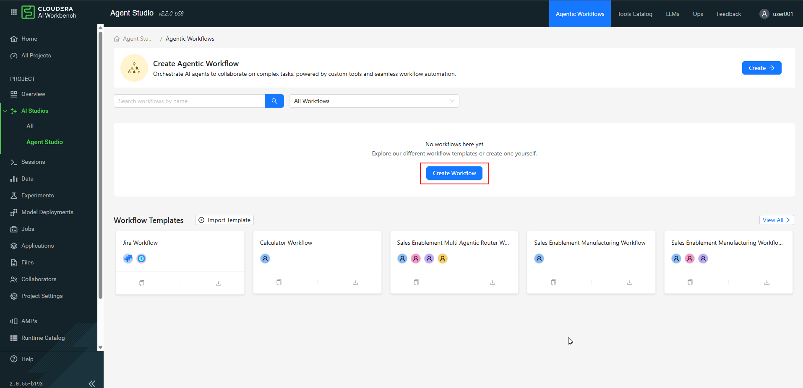
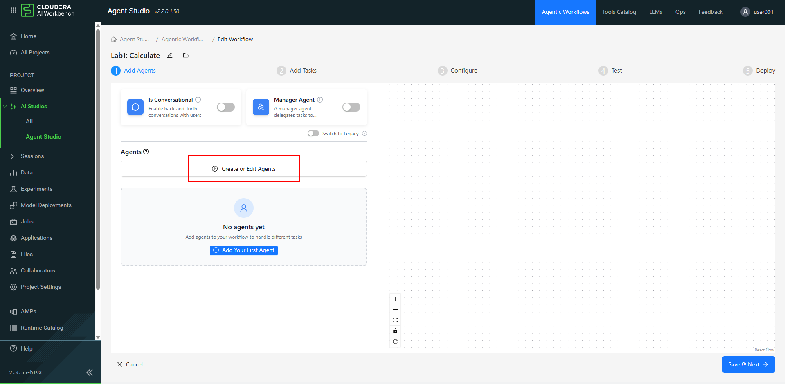
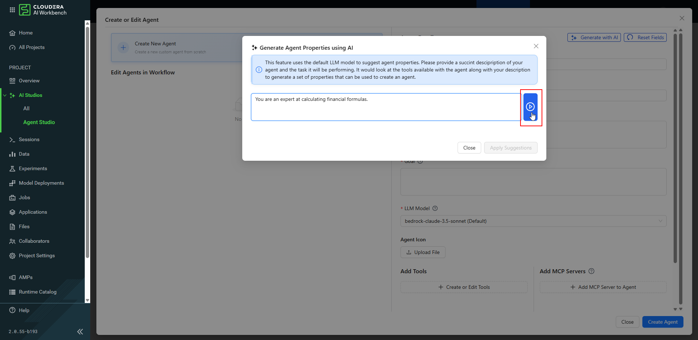
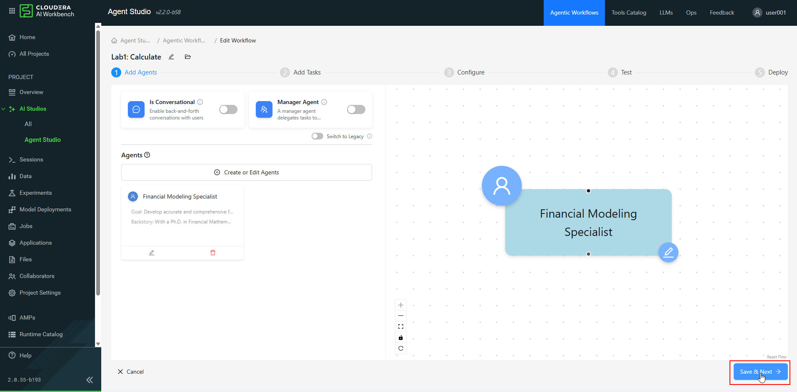
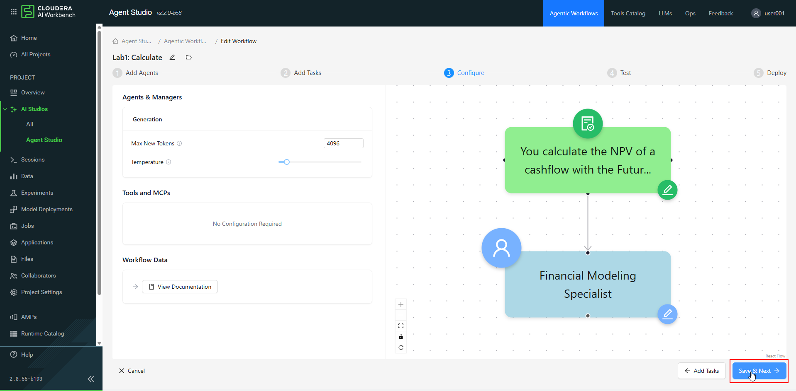
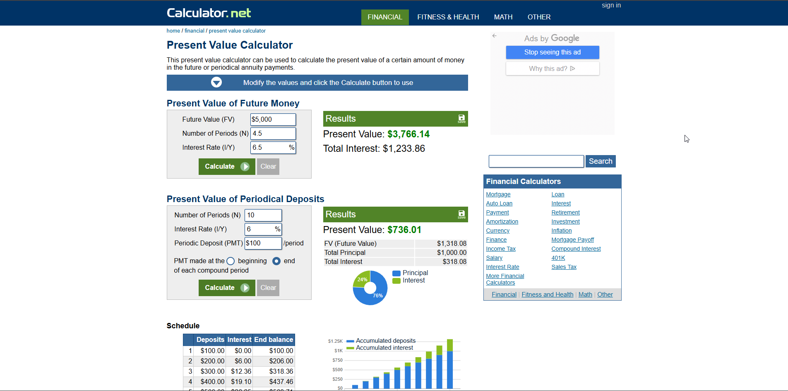
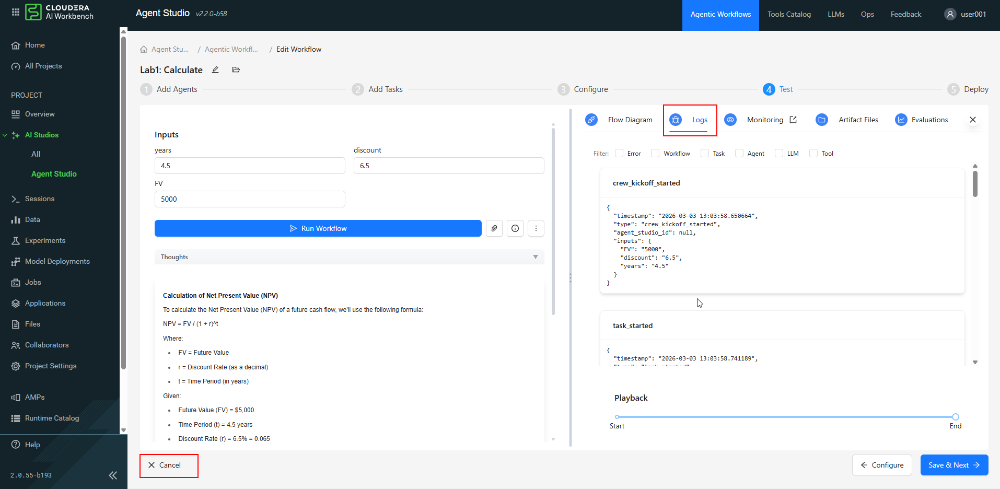

Lab 1 — Building a Financial Calculation Agent¶
In this lab you'll quickly deploy a financial-modeling agent in Cloudera AI Agent Studio. You'll assign a complex task and observe how the agent breaks the logic into step-by-step thoughts and actions — then explore the "poets vs. quants" phenomenon, witnessing firsthand the limitations of using a standalone LLM for precise mathematical computation.
Goals
- [ ] Build an agent in ~10 minutes
- [ ] Create an agent and a task
- [ ] See the limitations of using an LLM agent alone
Requirements¶
You must be logged into your assigned Cloudera AI project with the Agent Studio application launched. See the Agent Studio page for setup instructions.
Step 1 — Create a New Workflow¶
- Navigate to Agent Studio for your assigned lab.
- On the Agent Studio home page, click Create Workflow.

- Name it
Lab1: Calculatein the workflow details. - Click Create Workflow to proceed to the agent creation screen.

| Setting | Value |
|---|---|
| Is Conversational | OFF — single-run pipeline, not a chat loop |
| Manager Agent | OFF — one agent, no routing needed |
Step 2 — Generate Agent Properties with AI¶
- In the agent definition area, click Create or Edit Agents.

- Instead of typing the details manually, click Generate with AI to automatically create the agent's role, goal, and backstory.

- Enter this simple prompt into the AI generator:

- Press the button to generate the properties, review the suggested Role, Goal, and Backstory, then click Apply Suggestions to populate the agent detail fields.

The generated agent will have all four required fields:
| Field | Generated value (example) |
|---|---|
| Name | Quantitative Financial Analyst |
| Role | Quantitative Financial Analyst |
| Backstory | 12+ years of experience in quantitative finance, investment banks and hedge funds... |
| Goal | Provide precise and accurate financial calculations using advanced mathematical formulas... |
Step 3 — Finalize the Agent¶
- Select the specific LLM model assigned by your instructor.
- Click Create Agent.

- Close the Create or Edit Agent dialog, then click Save & Next.

Step 4 — Add the Calculation Task¶
- Click Add Task.

- In the Task Description, enter the following. Note the curly braces for variables:
You calculate the NPV of a cashflow with the Future Value: {FV}, Time Period: {years}, and Discount Rate: {discount}. Show your work.
- Fill out the Expected Output field:
- In the agent dropdown, select the agent you created in the previous step.
- Click Add Task, then Save & Next.

Dynamic input variables
Each {word} in curly braces becomes a run-time input field. {FV}, {years}, and
{discount} will appear as input boxes when you test the workflow.
Step 5 — Review Configuration¶
- On the configuration screen, leave settings such as tokens and temperature at their default values.
- Click Save & Next.

Step 6 — Test the Workflow¶
- On the test screen, fill in the input variables:
| Variable | Value |
|---|---|
| Future Value | 5000 |
| years | 4.5 |
| discount | 6.5 |
- Click Run Workflow.

- Observe the output. The agent breaks down the formula and performs a step-by-step calculation, resulting in an approximate value around $3,700.

Step 7 — Validate Output and Review Limitations¶
- Open the Present Value Calculator
in a new browser tab and enter the same inputs:
- Future Value =
5,000 - Number of Periods =
4.5 - Interest Rate =
6.5
- Future Value =
- Click Calculate and note the precise present value:
$3,766.14. - Compare this true value with your agent's output.

Poets vs. quants
The discrepancy between the agent's answer and the external calculator shows that while LLMs are excellent at decomposing a problem, they struggle with accurate decimals and rounding. This highlights the limitation of using an LLM for exact math — and motivates Lab 2, where we hand the arithmetic to a deterministic tool.
Step 8 — Review Agent Studio Logs¶
- Return to Agent Studio and review the Logs to see the execution flow — crew started, task kicked off, LLM call completed — all happening within the LLM environment.

- Click Cancel on the workflow creation; we'll create a new workflow in the next lab.
🚀 We have now concluded Lab 1.
Next: Lab 2 — Add a Calculator Tool¶
In Lab 2 you'll address this precision limitation by adding a Calculator Tool to the workflow, so the agent delegates the arithmetic to deterministic code and lands on the exact answer.